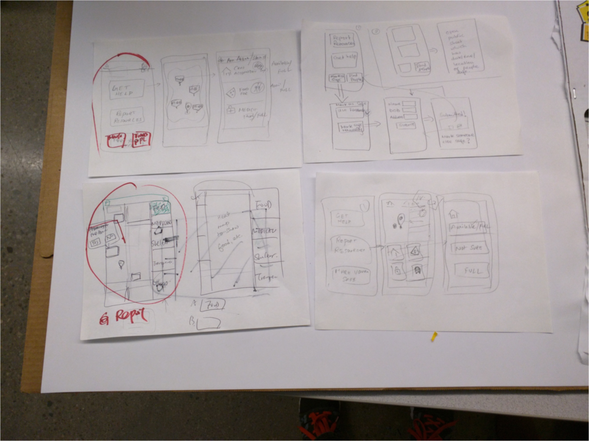
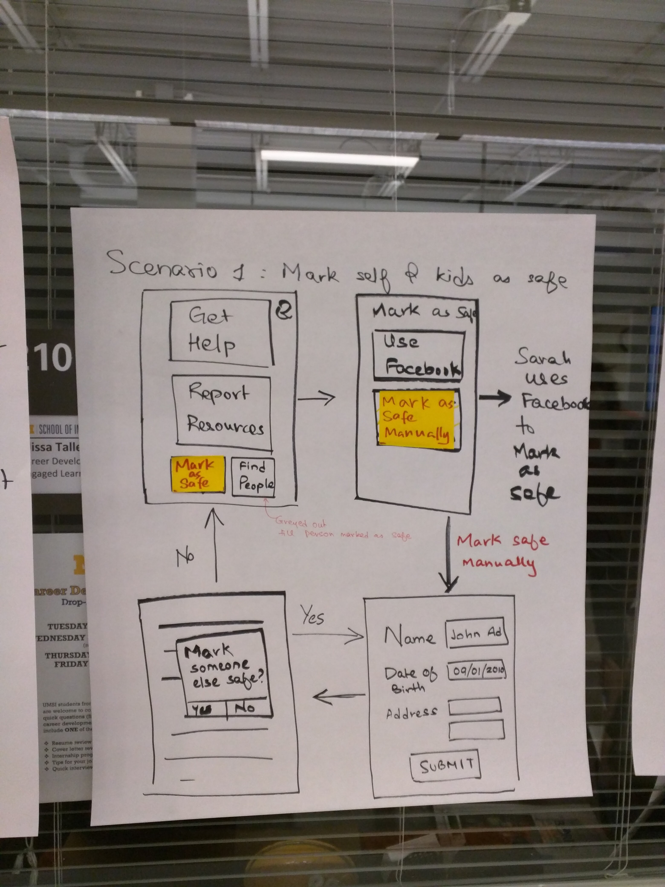
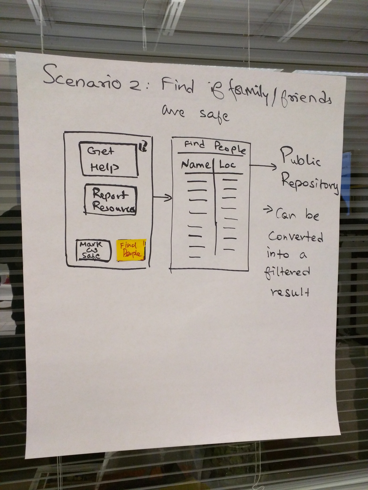
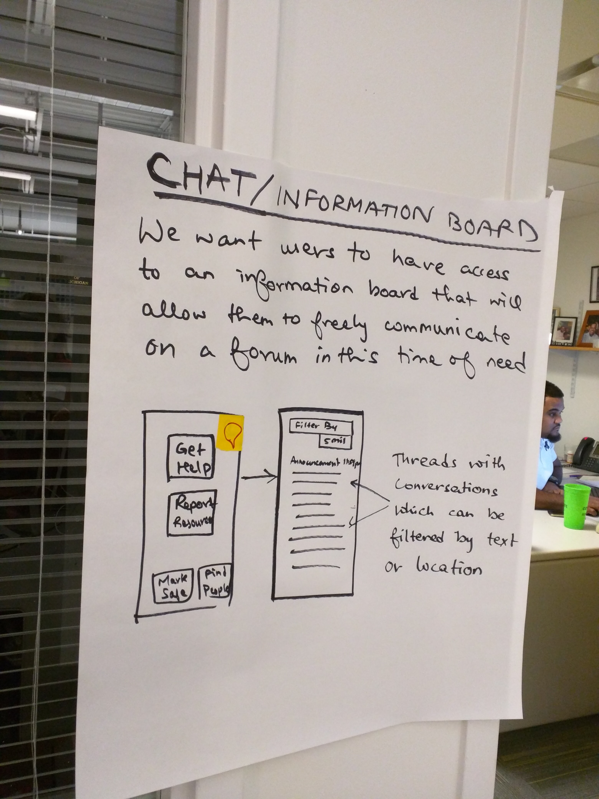

Design
Design Philosophy: To design a solution that is simple, accessible to everyone and lightweight.
Tools: Paper sketching, Whiteboarding, Empathy maps, sketch.
Ideation and Brainstorming
We took the research to whiteboard and made the findings tangible by putting it on post-its. We then identified overlapping needs and analysed the constraints we had to design a solution around it.
The biggest constrain we had was that earthquake has a major effect on cell towers and electricity and hence a mobile based solution might not be an ideal solution.
However, a web based solution looked less promising than a mobile application. We had to carefully weigh all the constraints and opportunities we had before diving into solutions.

Personas:
We created few personas that demonstrates the user needs which were the result of interviews and secondary research. Below is a snapshot of few of the personas we came up with.
We identified 3 plausible scenarios to pronounce the needs of the users. These scenarios helped us design the features with more focus on the user needs.
The Solution:
We wanted to design something thats very obvious and easy to understand and access for the users. We incorporated all the research we did with a pinch of salt that the solution needs to be a mobile application so as to maximize the footprint of the solution. A mobile application was a lesser evil and a viable option in comparision to other solutions.
Key Features:
Marking Safe:
During our research phase we identified that people wanted to know if their friends and family members are safe. This feature allows the user to mark himself/herself safe.
The feature also has the capability of allowing a user to mark someone else safe as well.

Finding people:
This feature is something we decided among the team to implement in a variety of ways. We initially thought about making use of location services and letting them know about the last seen location. We later decided against it since we considered battery as a key resource and wanted to cut down on resource heavy features such as gps.
We endedup deciding to have a public repository contributed by crowdsourced information about people and their current location. Everyone has access to the repository.

Chat Boards:
The chat boards was a result of wanting to create a community among surviors and being able to identify resources such as food and shelter. This will also allow NGO's and other external parties to identify the needs.

Prototyping:
We prototyped the design using sketch and principle. Our aim was to keep the interactions simple and hence we didnt invest time in designing the micro-interactions and instead wanted to have large buttons and incorporated more visuals to cover a larger userbase from the young to elderly people.